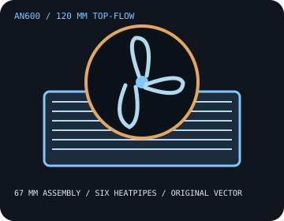

[ INDIVIDUAL COMPONENT // COOLING ]
DeepCool AN600
A 67 mm top-flow cooler with six heatpipes, a 120 × 15 mm fan, and a manufacturer-stated 180 W TDP rating.

IDENTIFICATION: Match the AN600 model and included socket hardware; do not substitute mounting parts from another DeepCool series.
Manufacturer specifications
| Overall dimensions | 122 × 120 × 67 mm; heatsink 121 × 120 × 52 mm; included fan 120 × 120 × 15 mm. Assembly weight: 628 g. |
|---|---|
| Fan / thermal limits | 120 mm PWM fan, 500–1,850 RPM ±10%, 61.56 CFM, 1.97 mmAq, ≤24.4 dB(A), 0.7 A / 8.4 W. DeepCool advertises a 180 W TDP rating; this is a cooler rating, not a guarantee for CPU boost power or every enclosure. No radiator. |
| Mounting kit and sockets | Use the AN600-supplied Intel/AMD retention kit and the AN600 manual. Listed sockets: Intel LGA 1851/1700/1200/115x; AMD AM4/AM5. Confirm board, CPU generation, and the included fasteners before mounting. |
| Clearance caveats | Provide 67 mm vertical clearance and room for the 122 × 120 mm footprint. Manufacturer design notes include DIMMs up to 40 mm; verify that RAM, VRM shrouds, PCIe cards, and case walls do not intrude on the fan or fin envelope. |
Safe installation and maintenance
Use the supplied AN600 retention hardware and follow the model-specific guide. Do not combine the stated TDP figure with unrelated CPU power limits. Keep the fan unobstructed, check the exact board layout, and test temperatures under the intended sustained workload after assembly.
- Disconnect system power before installation or cleaning; avoid bending the fin stack.
- If the cooler is removed, clean the contact surfaces and renew thermal compound before remounting.
Manufacturer sources
- DeepCool — AN600 product specificationsDimensions, fan specifications, rated TDP, and supported sockets.
- DeepCool — AN600 user manual (PDF)Manufacturer mounting sequence and included installation hardware.
Static catalog reference only; check current product documentation and measured system clearances.